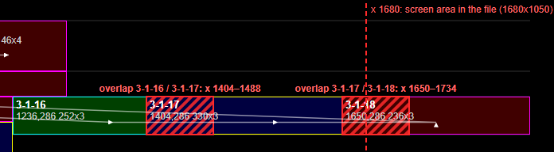
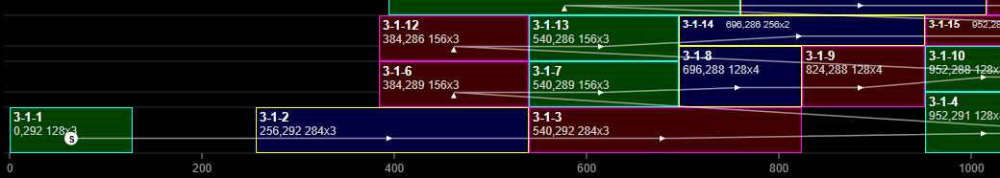
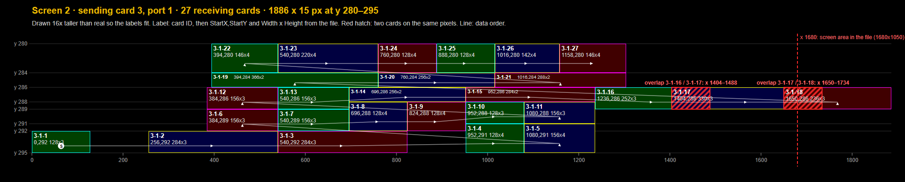
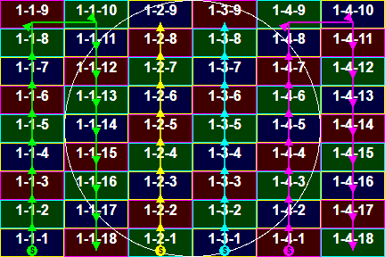

A NovaLCT screen file with two screens. Screen 1 is a clean 6 × 9 cabinet layout. Screen 2 is a band of 27 thin strips, 1886 × 15 px, with two pairs of receiving cards on the same pixels, a right end beyond the file's screen area, and a sending-card number to confirm. Below: the findings, cabinet maps for both screens, and every file.
Screen 1 is fine as mapped, with one question about how its four ports are split.
Screen 2 needs four checks before it goes on site: two pairs of receiving cards that share pixels (most likely a typing error), cards that reach past the 1680 px screen area, the sending-card number (3, with nothing on 2), and whether its 2–4 px tall "cabinets" really are LED strips.
| Screen 1 | Screen 2 | |
|---|---|---|
| Screen type in NovaLCT | standard (regular grid) | complex (each card placed by hand) |
| Sending card | 1 | 3 |
| Ports | 4 | 1 |
| Receiving cards | 54 (6 columns × 9 rows) | 27 |
| Card size | 72 × 32 px, all the same | 128–366 × 2–4 px, all different |
| Position · size | 0,0 · 432 × 288 px | 0,280 · 1886 × 15 px |
| Status | OK1 question | 1 likely error2 checks1 to confirm |
3-1-16 (x 1236–1488) and 3-1-17 (x 1404–1734) share x 1404–1488; 3-1-17 and 3-1-18 (x 1650–1886) share x 1650–1734, on the row y 286–289. Each overlap is exactly 84 px. Everywhere else on this screen a card starts exactly where its left neighbour ends.
Effect: NovaLCT accepts it, but the same 84 px of picture goes to two strips at each of those joins, so the image doesn't line up there.
Likely fix: widths 168 for 3-1-16 and 246 for 3-1-17 (instead of 252 and 330) close both overlaps and leave every position as it is. Moving 3-1-17 to x 1488 and 3-1-18 to x 1818 would also close them, but the row would then end at x 2054. Measuring the real strips tells which one is right. See the zoom below.
The file's screen area is 1680 × 1050. 3-1-17 ends at x 1734 and 3-1-18 at x 1886, 54 and 206 px past 1680. If sending card 3's input is 1680 px wide, those pixels get no picture, so most of 3-1-18 stays black. With a 1920 × 1080 input they are fine.
Check: the input resolution of sending card 3. Fixing item 1 by moving cards rather than shortening them would push the end further right.
Screen 1 is on sending card 1. If the system has only two sending cards (or one controller with two outputs), screen 2 belongs on sending card 2; on card 3 it gets no data.
Check: the hardware chain against NovaLCT's list of sending cards.
All 27 receiving cards are 128–366 px wide and only 2, 3 or 4 px tall, stacked into seven rows between y 280 and 295. That fits LED strips or pixel lines, one receiving card per strip group. If they are meant to be ordinary cabinets, the heights and Y positions are wrong.
Confirm which product screen 2 is.
Port 1 serves columns 1–2 and port 4 columns 5–6 (18 cards each, up one column and down the next); ports 2 and 3 serve only column 3 and column 4 (9 cards each, bottom to top). That is fine electrically: the busiest port carries 41,472 px.
Check that the cables run this way. If the site is wired as three ports of two columns each, ports 2–4 are mapped wrong.
On screen 2's bottom row (y 292–295), x 128–256 and x 824–952 have no card: fine if the strips really have gaps there. The file stores corner-point data for screen 1 only, and its screen 1 block lacks 15 bytes that NovaLCT's own files carry. Both point to another NovaLCT version or an edited file; worth knowing if NovaLCT complains when loading it.
Screen 2 is only 15 px tall, so the pictures below are drawn 16 times taller than real to make room for labels. Each card is labelled with its ID, then StartX,StartY and Width × Height from the file. The red hatching marks pixels that two cards share; the thin line is the data order, starting at S.



| Card | StartX | StartY | Width | Height | Ends at x | Note |
|---|---|---|---|---|---|---|
| 3-1-1 | 0 | 292 | 128 | 3 | 128 | |
| 3-1-2 | 256 | 292 | 284 | 3 | 540 | |
| 3-1-3 | 540 | 292 | 284 | 3 | 824 | |
| 3-1-4 | 952 | 291 | 128 | 4 | 1080 | |
| 3-1-5 | 1080 | 291 | 156 | 4 | 1236 | |
| 3-1-6 | 384 | 289 | 156 | 3 | 540 | |
| 3-1-7 | 540 | 289 | 156 | 3 | 696 | |
| 3-1-8 | 696 | 288 | 128 | 4 | 824 | |
| 3-1-9 | 824 | 288 | 128 | 4 | 952 | |
| 3-1-10 | 952 | 288 | 128 | 3 | 1080 | |
| 3-1-11 | 1080 | 288 | 156 | 3 | 1236 | |
| 3-1-12 | 384 | 286 | 156 | 3 | 540 | |
| 3-1-13 | 540 | 286 | 156 | 3 | 696 | |
| 3-1-14 | 696 | 286 | 256 | 2 | 952 | |
| 3-1-15 | 952 | 286 | 284 | 2 | 1236 | |
| 3-1-16 | 1236 | 286 | 252 | 3 | 1488 | overlaps 3-1-17 by 84 px |
| 3-1-17 | 1404 | 286 | 330 | 3 | 1734 | overlaps 3-1-16 by 84 px overlaps 3-1-18 by 84 px 54 px past x 1680 |
| 3-1-18 | 1650 | 286 | 236 | 3 | 1886 | overlaps 3-1-17 by 84 px 206 px past x 1680 |
| 3-1-19 | 394 | 284 | 366 | 2 | 760 | |
| 3-1-20 | 760 | 284 | 256 | 2 | 1016 | |
| 3-1-21 | 1016 | 284 | 288 | 2 | 1304 | |
| 3-1-22 | 394 | 280 | 146 | 4 | 540 | |
| 3-1-23 | 540 | 280 | 220 | 4 | 760 | |
| 3-1-24 | 760 | 280 | 128 | 4 | 888 | |
| 3-1-25 | 888 | 280 | 128 | 4 | 1016 | |
| 3-1-26 | 1016 | 280 | 142 | 4 | 1158 | |
| 3-1-27 | 1158 | 280 | 146 | 4 | 1304 |

| Sending card-port | Cards | Columns | Data path | First card | Pixels |
|---|---|---|---|---|---|
| 1-1 | 18 | 1–2 | up column 1, then down column 2 | 1-1-1 at 0,256 (bottom) | 41,472 |
| 1-2 | 9 | 3 | up column 3 | 1-2-1 at 144,256 (bottom) | 20,736 |
| 1-3 | 9 | 4 | up column 4 | 1-3-1 at 216,256 (bottom) | 20,736 |
| 1-4 | 18 | 5–6 | up column 5, then down column 6 | 1-4-1 at 288,256 (bottom) | 41,472 |
Numbering is continuous on every port (1 to n, no gaps or duplicates), every step goes to a neighbouring cabinet, and no cabinets overlap.
| File | What it is | Size | Download |
|---|---|---|---|
| Mapping-Komplett-V01.scr | The NovaLCT file as received | 1,970 bytes | .scr |
| Screen 1 cabinet map | Exact size, to play on screen 1: every cabinet shows its ID, data paths per port | 432 × 288 | PNG · SVG |
| Screen 2 cabinet map | Exact size, to play on screen 2: one solid bar per receiving card (no room for text) | 1886 × 15 | PNG · SVG |
| Screen 2 diagram | For reading, not for the LEDs: drawn 16× taller with IDs, positions, overlaps and data order | 1986 × 400 | PNG · SVG |
| Sending card 1 overview | Screen 1 at its position on sending card 1's input, padded to the file's screen area | 1680 × 1050 | PNG · SVG |
| Sending card 3 overview | Screen 2 at its position on sending card 3's input; 1886 wide because it reaches past the screen area | 1886 × 1050 | PNG · SVG |
make_grid.py. Its reading of standard screens was corrected for this file (it gave the same cabinets as before on every earlier sample).